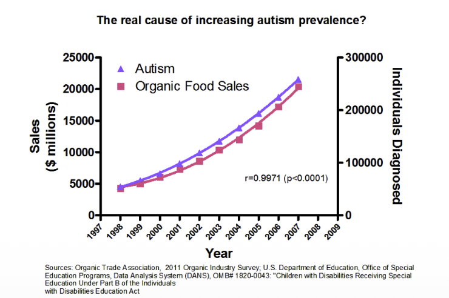

1. 상관관계(Correlation)는 인과관계(Causation)가 아니다
- 통계학 수업을 들었다면 누구나 한 번쯤 들어봤을 문장입니다.
- 하지만 실제 데이터 분석에서 우리는 이 함정에 너무나 쉽게 빠집니다.
- 재미있는 예시들을 살펴봅시다.
(1) 자폐증과 유기농 식품 판매량
- 미국 내 자폐증(Autism) 진단 수와 유기농 식품 판매량의 추이를 그린 그래프입니다.

- 두 변수의 상관계수(\(r\))는 무려 0.9971입니다.
- 그렇다면 유기농 식품이 자폐증의 원인일까요? 당연히 아닙니다. 단순히 시간이 흐르며 두 지표가 같이 상승했을 뿐입니다.
- 이를 허위 상관(Spurious Correlation)이라고 합니다.
(2) 소방관이 많으면 불이 커진다?
- 데이터를 보면 투입된 소방관의 수(\(X\))와 화재의 크기(\(Y\))는 아주 강한 양의 상관관계를 가집니다.
\[Y = \beta X + \beta_0\]
- 단순 회귀분석을 돌리면 \(\beta\)(기울기)는 양수가 나옵니다.
- 그렇다면 화재 피해를 줄이기 위해 소방관을 줄여야 할까요?
- 상식적으로 말이 안 됩니다. 사실은 화재가 크기 때문에(Cause) 소방관이 많이 출동한 것(Effect)이거나, 건물의 크기 같은 제3의 요인이 작용했을 것입니다.
- 데이터(\(X, Y\))만 봐서는 이 인과의 방향을 알 수 없습니다.
2. 심슨의 역설 (Simpson’s Paradox)
- 가장 충격적이었던 예시는 심슨의 역설입니다.
- 어떤 신약(Drug)의 회복률(Recovery Rate)을 분석한 데이터입니다.
상황 1: 전체 데이터 (Total)
| 회복(Y) | 미회복(\(\neg Y\)) | 회복률(Rate) | |
|---|---|---|---|
| 약 복용 (Drug) | 20 | 20 | 50% |
| 미복용 (No Drug) | 16 | 24 | 40% |
- 전체로 보면 약을 먹었을 때 회복률이 더 높습니다(50% > 40%).
- 의사는 약을 처방해야 할 것 같습니다.
상황 2: 성별로 나누어 본 데이터 (Stratified by Sex)
- 하지만 남성과 여성으로 데이터를 쪼개서 보면 이야기가 달라집니다.
- 남성 (Male): 약 복용(60%) < 미복용(70%)
- 여성 (Female): 약 복용(20%) < 미복용(30%)
- 남성 그룹에서도, 여성 그룹에서도 약을 안 먹는 게 회복률이 더 높습니다. & 전체 데이터에서는 약이 좋다고 하는데, 쪼개보니 약이 나쁘다고 합니다.
- 도대체 의사는 어떤 테이블을 믿어야 할까요?
결론: 인과 그래프(Causal Graph)가 필요하다
- 정답은 “데이터만으로는 알 수 없다”입니다.
- 성별(\(F\)), 약 복용(\(X\)), 회복(\(Y\)) 사이의 인과 구조가 어떻게 그려지느냐에 따라 우리가 봐야 할 테이블이 달라집니다.
- 이것이 바로 우리가 단순히 데이터(\(P(Y|X)\))를 보는 것을 넘어, 인과 구조(Structure)를 고민해야 하는 이유입니다.
3. Pearl의 인과 계층 (Pearl’s Causal Hierarchy)
- Judea Pearl은 인과추론의 수준을 세 단계의 사다리(Ladder)로 정의했습니다.
Level 1: 관찰 (Association / Seeing)
- 질문: “What is?” (만약 \(X\)를 본다면, \(Y\)는 어떨까?)
- 수식: \(P(y|x)\)
- 특징: 기존의 머신러닝(Deep Learning, Decision Tree 등)이 가장 잘하는 영역입니다. 데이터의 상관성을 파악합니다.
Level 2: 개입 (Intervention / Doing)
- 질문: “What if I do?” (만약 내가 \(X\)를 강제로 시킨다면, \(Y\)는 어떻게 될까?)
- 수식: \(P(y | do(x))\)
- 특징: 여기서부터 진짜 인과추론의 영역입니다. 단순히 \(X\)를 관찰하는 것(\(x\))과, 실험자가 개입하여 값을 바꾸는 것(\(do(x)\))은 다릅니다. 강화학습(RL)이나 A/B 테스트가 여기에 속합니다.
Level 3: 반사실 (Counterfactuals / Imagining)
- 질문: “What if I had acted differently?” (그때 내가 다른 선택을 했더라면, 결과는 달라졌을까?)
- 수식: \(P(y_x | x', y')\)
- 특징: 이미 일어난 일(\(x', y'\))을 바탕으로, 일어나지 않은 가상의 세계(\(y_x\))를 추론합니다. 인간만이 가진 고도의 추론 능력인 회고(Retrospection)와 상상(Imagining)의 영역입니다.
4. 마치며
- 기존의 머신러닝은 Level 1 (Association)에 머물러 있었습니다.
- 하지만 진정한 지능(Intelligent Agent)이나 정책 결정(Policy Making)을 위해서는 Level 2, 3의 추론이 필수적입니다.
- 이번 강의를 통해 단순히 데이터를 예측(Prediction)하는 것을 넘어, 세상의 작동 원리(Mechanism)를 이해하는 인과추론의 세계로 나아가고자 합니다.
Reference:
- Prof. Sanghack Lee, Causal Inference for Data Science, GSDS SNU.
- Judea Pearl et al., Causal Inference in Statistics: A Primer.